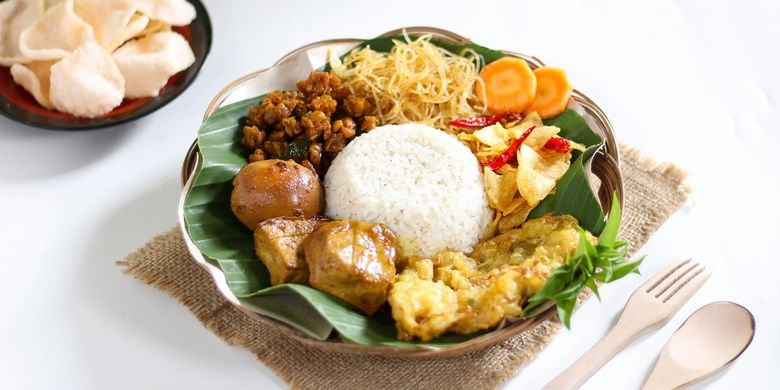

Nasi Uduk
Resep Nasi Uduk

Bahan 1:
- 6 sdm minyak goreng
- 8 buah bawang merah rajang
- 3 siung bawang putih cincang
- 3 biji cengkeh
- 3 cm kayu manis di belah
- 2 lembar daun salam
- 1 lembar daun pandan sobek dan diikat
- 1 batang serai memarkan
- 150 ml air
- 2 sdm santan instan
- 1 sdt garam
- 500 g nasi putih dingin
Bahan 2: Sambal Kacang
- 50 g kacang tanah
- 200 ml air
- 3 siung bawang putih goreng
- 5 buah cabe keriting goreng
- 1/2 sdt terasi goreng
- 1 sdt garam
- 1 1/2 sdm gula pasir
Bahan 3:
- 4 potong ayam goreng
- 4 potong tahu dan tempe ungkep goreng
- 2 sdm sambal
- 2 sdm kecap manis
- Timun, kol, dan kemangi sesuai keinginan
Cara Membuat:
- Tumis bawang merah hingga menjadi bawang goreng, angkat dan tiriskan.
- Masukkan bawang putih, cengkeh, kayu manis, daun salam, pandan, dan serai. Masak hingga harum dan bawang putih kecokelatan.
- Tambahkan air, santan, dan garam. Rebus dengan api kecil hingga menyusut sekitar 50%.
- Tambahkan nasi, aduk cepat agar tercampur rata dengan bumbu dan nasi tidak basah. Angkat.
- Haluskan semua bahan 2 dengan blender hingga menjadi pasta halus.
- Sajikan dengan ayam goreng, tahu tempe goreng, sambal, kecap, dan lalapan sesuai keinginan.
Link video: